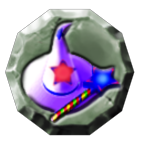
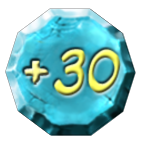
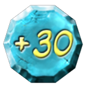

13 |
Caselle |
 |
Le caselle si trovano sul tabellone nella modalità Avventura. Casella "Bivio"
Passando sopra questa casella, il giocatore che sta giocando in quel turno deve scegliere verso quale direzione andare. Casella "Ripara" Passando sopra questa casella, i giocatori possono pagare 500 monete per riparare la macchina nel caso in cui questa sia danneggiata. Casella "Sfida"
Quando la Zucca-mobile si ferma su questa casella, i giocatori dovranno affrontare una sfida. Casella "Pergamena magica"
Passando sopra questa casella, i giocatori potranno comprare una pergamena magica. Casella "Giochiamo!"
Quando la Zucca-mobile si ferma su questa casella, i giocatori dovranno affrontare un mini gioco. Casella "Fantasma Maghetto"  Questa casella si trova soltanto all’ingresso di alcune aree speciali. Quando la macchina ci passa sopra, apparirà il Fantasma Maghetto che farà un incantesimo sui personaggi rendendoli piccolissimi e dandogli così accesso all’area successiva. Se i personaggi passano una seconda volta su questa casella, il Fantasma Maghetto farà un altro incantesimo riportandoli alla loro grandezza naturale. Casella "Vuota"
Questa casella non ha nessun effetto sul gioco. Caselle "-10" e "-20"
Quando la Zucca-mobile si ferma su una di queste caselle, un fantasma apparirà all’improvviso spaventando i giocatori e toglierà a ognuno 10 o 20 monete. Caselle "+20", "+30" e "+50"
Quando la Zucca-mobile si ferma su una di queste caselle, tutti i giocatori riceveranno un bonus di 20, 30 o 50 monete. |


 

 |
 |
 |